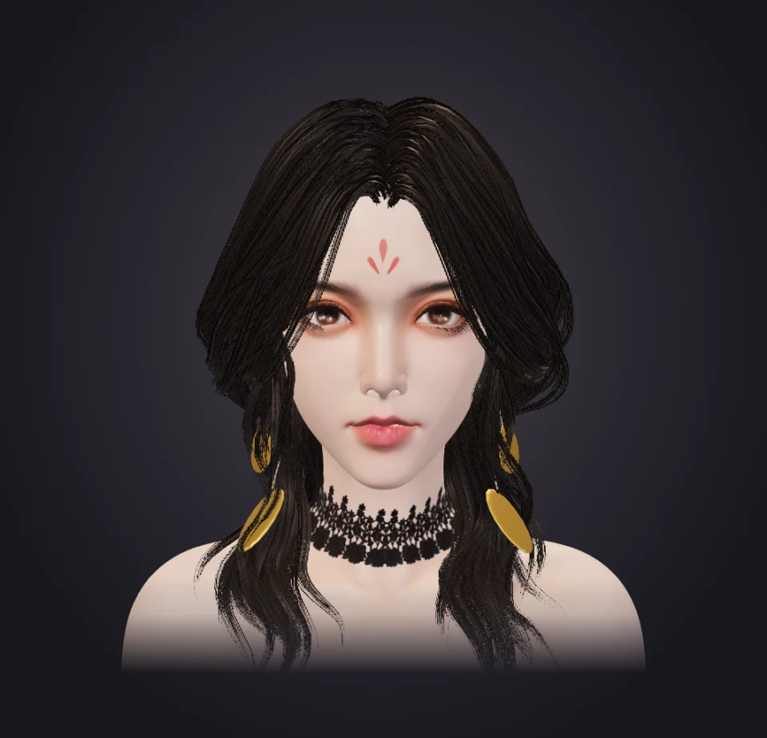

动作实录
从同一个原生桌宠预览录制，依次展示侧转、微笑和颔首。
制作记录
- 从源文件回读 9 组头发对象、5,293 条 Bezier 样条和 154,729 个控制点。
- 脸、肩胸、眼球、睫毛、颈饰和耳饰保留原网格。脸和肩胸使用原 4K 漫反射，眼球使用原 2K 漫反射。
- 原生预览验证 12 项动作与表情，包括待机、聆听、思考、说话、颔首致意和休息。
非商用技术展示。角色沿用来源提供的通用称呼。知末模型 1199634633

从同一个原生桌宠预览录制，依次展示侧转、微笑和颔首。
非商用技术展示。角色沿用来源提供的通用称呼。知末模型 1199634633